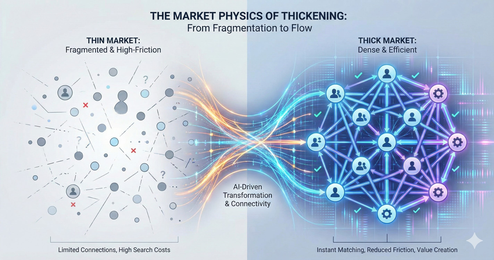

A four-tool stack for diagnosing structural friction and deploying open-source matching infrastructure. Built on 50 years of practitioner experience.

From diagnosing structural friction to deploying open-source matching infrastructure.
A rigorous diagnostic tool cross-tabulating generic thin market challenges against five AI engineering primitives.
250 prospective thin markets across 12 sectors, each tagged with binding challenges and sponsor opportunities.
A multi-model AI synthesis system that forensically deconstructs the market physics of any company in ~5 minutes.
An MIT-licensed marketplace engine and curated context manager for building secure, AI-mediated transaction networks.
While Cosolvent and CommonContext are open source, testing a thin market requires realistic participants. ClientSynth is our proprietary simulation tool designed to flood a Cosolvent instance with synthetic, agentic buyers and sellers. It allows you to prove the market physics work before risking live participant capital.
Use the catalog as a sourcing scaffold and portfolio-coverage map, and request marketmaps on specific deals to forensically assess thin-market challenges.
Read the Investor's Guide →Standardize cohort vocabulary with the matrix, seed vertical theses from the catalog, and evaluate applicants on a consistent, evidence-based rubric.
Read the Accelerator Guide →Provide member-owned digital infrastructure to protect your industry from outside tech disruption. Deploy confidential clearinghouses to facilitate intra-industry trade and share surplus capacity without exposing trade secrets.
Read the Association Guide →Execute the "Middle Power" pivot by providing Canadian exporters with sovereign, AI-driven market infrastructure. Overcome the extreme friction of international B2B trade by automating regulatory translation and confidential matchmaking.
Read the Trade Policy Guide →